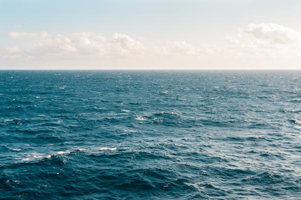

History of the Ocean
When the Earth formed about 4.5 billion years ago...
The ocean is not just where the land happens to be covered by water. The sea floor is geologically distinct from the continents. It is locked in a perpetual cycle of birth and destruction that shapes the ocean and controls much of the geology and geological history of the continents.
Geological processes that occur beneath the waters of the sea affect not only marine life, but dry land as well. The processes that mold ocean basins occur slowly, over tens and hundreds of millions of years. On this timescale, where a human lifetime is but the blink of an eye, solid rocks flow like liquid, entire continents move across the face of the earth and mountains grow from flat plains. To understand the sea floor, we must learn to adopt the unfamiliar point of view of geological time. Geology is very important to marine biology. Habitats, or the places where organisms live, are directly shaped by geological processes. The form of coastlines; the depth of the water; whether the bottom is muddy, sandy, or rocky; and many other features of a marine habitat are determined by this geology. The geologic history of life is also called Paleontology. The presence of large amounts of liquid water makes our planet unique. Most other planets have very little water, and on those that do, the water exists only as perpetually frozen ice or as vapor in the atmosphere. The earth, on the other hand, is very much a water planet. The ocean covers most of the globe and plays a crucial role in regulating our climate and atmosphere. Without water, life itself would be impossible.
Our ocean covers 72% of the earth’s surface. It is not distributed equally with respect to the Equator. About two-thirds of the earth’s land area is found in the Northern Hemisphere, which is only 61% ocean. About 80% of the Southern Hemisphere is ocean. The ocean is traditionally classified into four large basins. The Pacific is the deepest and largest, almost as large as all the others combined. The Atlantic “Ocean” is a little larger than the Indian “Ocean”, but the two are similar in average depth. The Arctic is the smallest and shallowest. Connected or marginal to the main ocean basins are various shallow seas, such as the Mediterranean Sea, the Gulf of Mexico and the South China Sea. Though we usually treat the oceans as four separate entities, they are actually interconnected. This can be seen most easily by looking at a map of the world as seen from the South Pole. From this view it is clear that the Pacific, the Atlantic and Indian oceans are large branches of one vast ocean system. The connections among the major basins allow seawater, materials, and some organisms to move from one “ocean” to another. Because the “oceans” are actually one great interconnected system, oceanographers often speak of a single world ocean. They also refer to the continuous body of water that surrounds Antarctic as the Southern Ocean.
The earth and the rest of the solar system are thought to have originated about 4.5 billion years ago from a cloud or clouds of dust. This dust was debris remaining from a huge cosmic explosion called the big bang, which astrophysicists estimate occurred about 15 billion years ago. The dust particles collided with each other, merging into larger particles. These larger particles collided in turn, joining into pebble-sized rocks that collided to form larger rocks, and so on. The process continued, eventually building up the earth and other planets. So much heat was produced as the early earth formed that the planet was probably molten. This allowed materials to settle within the planet according to their density. Density is the weight, or more correctly, the mass, of a given volume of a substance. Obviously, a pound of styrofoam weighs more than an ounce of lead, but most people think of lead as “heavier” than styrofoam. This is because lead weighs more than styrofoam if equal volumes of the two are compared. In other words, lead is denser than styrofoam. The density of a substance is calculated by dividing its mass by its volume. If two substances are mixed, the denser material will tend to sink and the less dense will float.
During the time that the young earth was molten, the densest material tended to flow toward the center of the planet, while lighter materials floated toward the surface. The light surface material cooled to make a thin crust. Eventually, the atmosphere and oceans began to form. If the earth had settled into orbit only slightly closer to the sun, the planet would have been so hot that all the water would have evaporated into the atmosphere. With an orbit only slightly farther from the sun, all the water would be perpetually frozen. Fortunately for us, our planet orbits the sun in a narrow zone in which liquid water can exist. Without liquid water, there would be no life on earth. The earth is composed of three main layers: the iron-rich core, the semiplastic mantle and the thin outer crust. The crust is the most familiar layer of earth. Compared to the deeper layers it is extremely thin, like a rigid skin floating on top of the mantle. The composition and characteristics of the crust differs greatly between the oceans and the continents. The geological distinction between ocean and continents is caused by the physical and chemical differences in the rocks themselves, rather than whether or not the rocks happen to be covered with water. The part of earth covered with water, the ocean, is covered because of the nature of the underlying rock.
Oceanic crustal rocks, which make up the sea floor, consists of minerals collectively called basalt that have a dark color. Most continental rocks are of general type called granite, which has a different mineral composition than basalt and is generally lighter in color. Ocean crust is denser than continental crust, though both are less dense than the underlying mantle. The continents can be thought of as thick blocks of crust “floating” on the mantle, much as icebergs float on water. Oceanic crust floats on the mantle too, but because it is denser it doesn’t float as high as continental crust. This is why the continents lie high and dry above sea level and oceanic crust lies below sea level and is covered by water. Oceanic crust and continental crust also differ in geological age. The oldest oceanic crust is less 200 million years old, quite young by geological standards. Continental rocks, on the other hand, can be very old, as old as 3.8 billion years…! The East Pacific ocean riseIn the years after World War II, sonar allowed the first detailed surveys of large areas of the sea floor. These surveys resulted in the discovery of the mid-oceanic ridge system, a 40,000 mile continuous chain of volcanic submarine mountains and valleys that encircle the globe like the seams of a baseball. The mid-oceanic ridge system is the largest geological feature on the planet. At regular intervals the mid-ocean ridge is displaced to one side or the other by cracks in the earth’s crust known as transform faults. Occasionally the submarine mountains of the ridge rise so high that they break the surface to form islands, such as Iceland and the Azores. The portion of the mid-ocean ridge in the Atlantic, known as the Mid-Atlantic Ridge, runs right down the center of the Atlantic Ocean, closely following the curves of the opposing coastlines. The ridge forms an inverted Y in the Indian Ocean and runs up the eastern side of the Pacific. The main section of ridge in the eastern Pacific is called the East Pacific Rise. Surveys also revealed the existence of a system of deep depressions in the sea floor called trenches. Trenches are especially common in the Pacific. When the mid-ocean ridge system and trenches were discovered, geologists wanted to know how they were formed and began intensively studying them. They found that there’s a great deal of geological activity around these features. Earthquakes are clustered at the ridges, for example, and volcanoes are especially common near trenches. The characteristics of sea floor rocks are also related to the mid-oceanic ridges. Beginning in 1968, a deep-sea drilling ship, the Glomar Challenger, obtained samples of the actual sea floor rock. It was found that the farther rocks are from the ridge crest the older they are. One of the most important findings came from the studying the magnetism of rocks on the sea floor. Bands of rock alternating between normal and reversed magnetism parallel the ridge. It was the discovery of the magnetic anomalies on the sea floor, together with other evidence, that finally led to an understanding of plate tectonics. The earth surface is broken up into a number of plates. These plates, composed of the crust and the top parts of the mantle, make up the lithosphere. The plates are about 100 km thick. As new lithosphere is created, old lithosphere is destroyed somewhere else. Otherwise, the earth would have to constantly expand to make room for the new lithosphere. Lithosphere is destroyed at the trenches. A trench is formed when two plates collide and one plate dips below the other and slides back down in to the mantle. This downwards movement of the plate into the mantle is called subduction. Because subduction occurs at the trenches, trenches are often called subduction zones. Subduction is the process that produces earthquakes and volcanoes, also underwater. The volcanoes may rise from the sea floor to create chains of volcanic islands.
We now realize that the earth’s surface has undergone dramatic alterations. The continents have been carried long distances by the moving sea floor, and the ocean basins have changed in size and shape. In fact, new oceans have been born. Knowledge of the process of plate tectonics has allowed scientists to reconstruct much of the history of these changes. Scientists have discovered, for example, that the continents were once united in a single supercontinent called Pangaea that began to break up about 180 million years ago. The continents have since moved to their present position.
